Propiedades básicas de las estrellas
Todo lo que sabemos de una estrella lo sabemos midiendo su luz. Cómo pasar del brillo que registra un detector a la luminosidad, temperatura, masa, radio y distancia de una estrella: magnitudes, cuerpo negro, binarias, eclipses y paralaje.
Las estrellas viven millones o miles de millones de años; nosotros las observamos apenas un instante de sus vidas. Por eso la astronomía estelar es, en el fondo, un ejercicio de ingeniería inversa con luz: recibimos un flujo de fotones y, a partir de él, reconstruimos las propiedades físicas del objeto que lo emitió. En esta clase se arma la caja de herramientas completa: luminosidad y flujo, la ley del cuadrado inverso, la escala de magnitudes (con su lógica invertida heredada de Hiparco), el color como termómetro, las binarias como balanzas, los eclipses como reglas y el paralaje como cinta métrica cósmica.
Luminosidad y flujo
Potencia total de la estrella vs. potencia por metro cuadrado.
La luminosidad es la energía que radia la estrella por unidad de tiempo: una potencia, en watts. Es una propiedad intrínseca de la estrella — se genera en su núcleo y no depende de quién la mire ni desde dónde. Para el Sol:
El flujo es la misma idea por unidad de área: cuánta energía por segundo atraviesa un “cuadrito” de 1 m² (un panel solar, la pupila del ojo, el espejo de un telescopio). Como las estrellas son esferas que radian en todas direcciones, el área natural para repartir la luminosidad es la superficie de una esfera:
Dos evaluaciones del mismo flujo solar
- En la superficie del Sol (): . Un panel solar de 1 m² pegado al Sol captaría 60 millones de watts.
- En la Tierra (, 150 millones de km): . El mismo panel, acá, capta unos 1370 W: la famosa constante solar.
La luminosidad no cambió; lo que cambió fue el área de la esfera sobre la que se reparte. Al alejarnos, la misma potencia se diluye sobre una esfera gigantesca y el flujo cae.
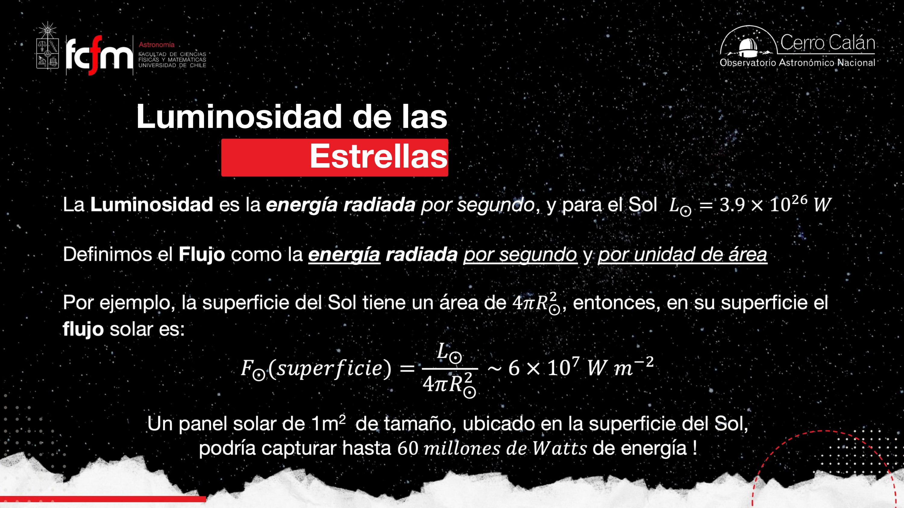
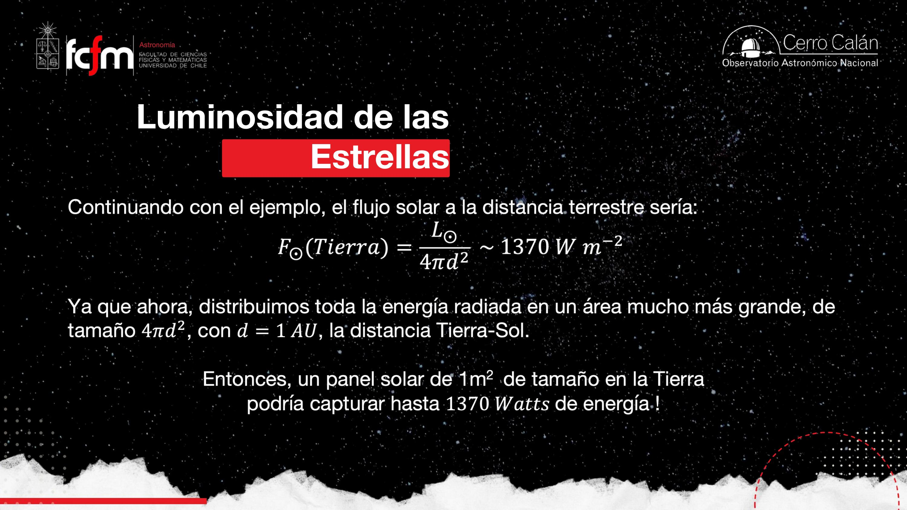
Es exactamente el link budget de telecomunicaciones: una antena emite una potencia (la “luminosidad”) y el receptor capta una densidad de potencia (el “flujo”), atenuada por la pérdida de espacio libre . La estrella es el transmisor isotrópico perfecto; el telescopio, la antena receptora.
Stefan-Boltzmann: L = 4πR²σT⁴
La primera gran ecuación de la astrofísica estelar.
Despejando la definición de flujo, la luminosidad es . Y para un cuerpo negro —una muy buena primera aproximación de cómo radia una estrella— el flujo en superficie depende solo de la temperatura, según la ley de Stefan-Boltzmann:
Uniendo ambas piezas, evaluadas en la superficie de la estrella (radio , temperatura superficial ):
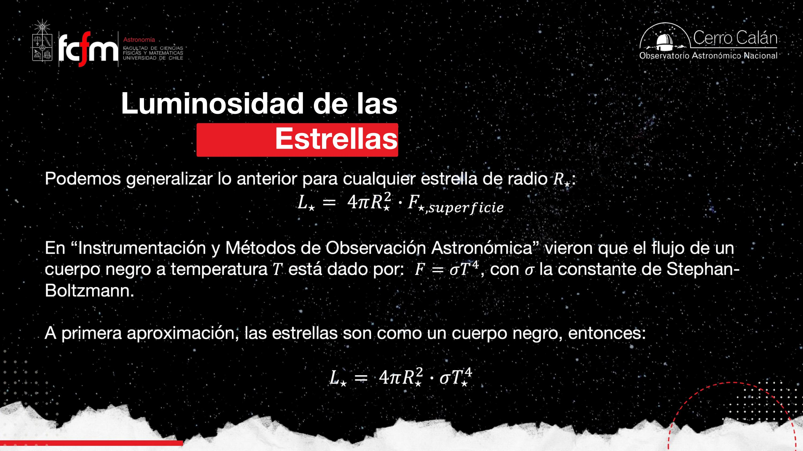
Qué nos dice la ecuación
- La luminosidad depende del tamaño (): a igual temperatura, una estrella más grande brilla más.
- Depende mucho más fuerte de la temperatura (): a igual tamaño, una estrella más fría brilla mucho menos. Duplicar T multiplica L por 16.
Un análisis de sensibilidad clásico: . La “ganancia” de la temperatura es el doble que la del radio: un error del 5% en T produce un 20% de error en L. La misma ley gobierna el diseño de radiadores térmicos de satélites.
Brillo aparente y ley del cuadrado inverso
Lo que medimos no es lo que la estrella es: hay que corregir por distancia.
El brillo aparente es el flujo de la estrella medido desde la Tierra. La palabra aparente es clave: no es una propiedad de la estrella, sino de la combinación estrella + distancia. Evaluando el flujo a la distancia del observador:
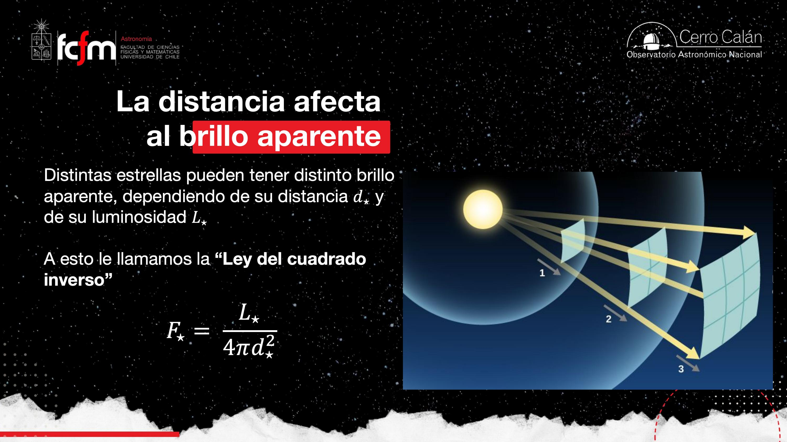
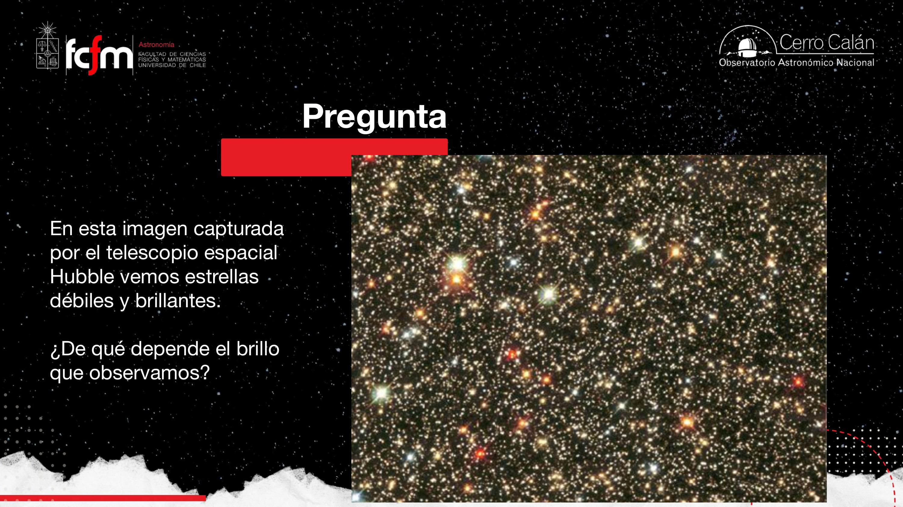
Los ejercicios mentales de la clase
- Misma distancia, una estrella 4× más luminosa: el 4 sale multiplicando y el denominador no cambia → recibe 4× más flujo. Flujo y luminosidad son directamente proporcionales.
- 4× más luminosa pero 2× más lejos: el denominador se hace → el 4 de arriba se cancela con el 4 de abajo y ambas se ven igual de brillantes.
- La Tierra a 10 AU del Sol: → recibiríamos una centésima del flujo actual. Es el régimen de los planetas gaseosos: por eso Saturno recibe tan poca energía solar.
Una gigante roja muy lejos y una enana roja muy cerca (mismo color, misma temperatura) pueden verse con el mismo brillo aparente: la gigante es intrínsecamente mucho más luminosa (por su ), pero la distancia se lo descuenta. Por eso en astronomía no se pueden inferir parámetros físicos directamente del brillo medido: hay que corregir por distancia. El cielo no es un plano: siempre está en 3D.
Separar brillo aparente de luminosidad es des-mezclar dos variables confundidas en una sola medición — el mismo problema de identificabilidad que estimar la potencia de un transmisor conociendo solo la señal recibida (RSSI): sin conocer la distancia, hay infinitas combinaciones (L, d) compatibles con el mismo flujo.
La escala de magnitudes
Un ranking de hace 2100 años que seguimos usando (al revés de lo intuitivo).
La magnitud aparente es la forma astronómica de expresar el brillo aparente (son sinónimos: “brillo aparente” y “magnitud aparente” es lo mismo, medido desde la Tierra). Tiene dos rarezas históricas:
- Es una escala inversa: menor magnitud = estrella más brillante. Una estrella de magnitud 1 brilla más que una de magnitud 2; una de −3, más que una de 5.
- Nació como un ranking a ojo: Hiparco (190–120 a.C.) ordenó las estrellas visibles: las más brillantes fueron “de 1ª magnitud” y las más débiles que alcanzaba a ver, “de 6ª magnitud”. Por eso el número crece hacia lo débil: era un puesto en un ranking, no una medida física.
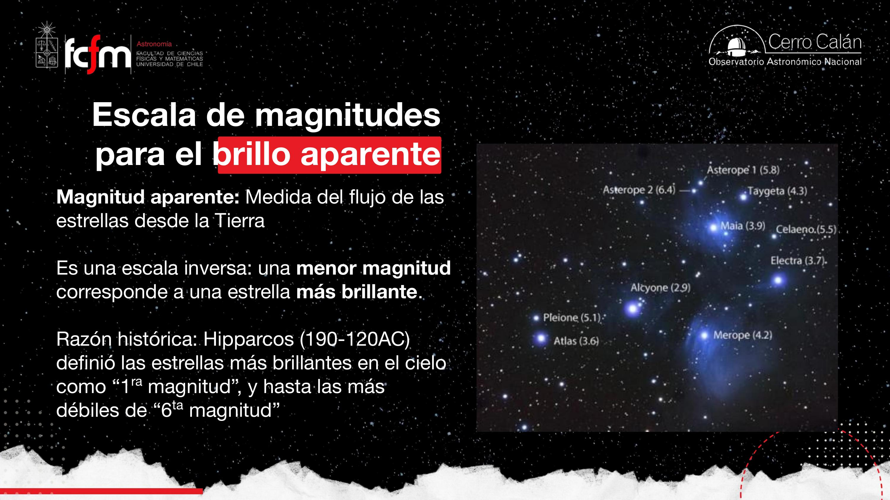
El límite del ojo y de los telescopios
El ojo humano, con pupilas de pocos milímetros, llega justo hasta magnitud 6 en un cielo oscuro y sin contaminación lumínica. De ahí en adelante se necesita más área colectora:
- Binoculares 10×50: hasta magnitud ≈ 9–10.
- Telescopio de 1 m: magnitud ≈ 18–19.
- Telescopios de 4 m (Víctor Blanco en Tololo, SOAR en Pachón): magnitud ≈ 26.
- Hubble y los Keck: magnitud ≈ 30 — objetos lejísimos, como las galaxias más distantes.
Dato práctico: aplicaciones como Stellarium muestran la magnitud de cada objeto; si es ≤ 6, lo puedes intentar a ojo desnudo; si es 8 o 10, necesitas binoculares o telescopio.
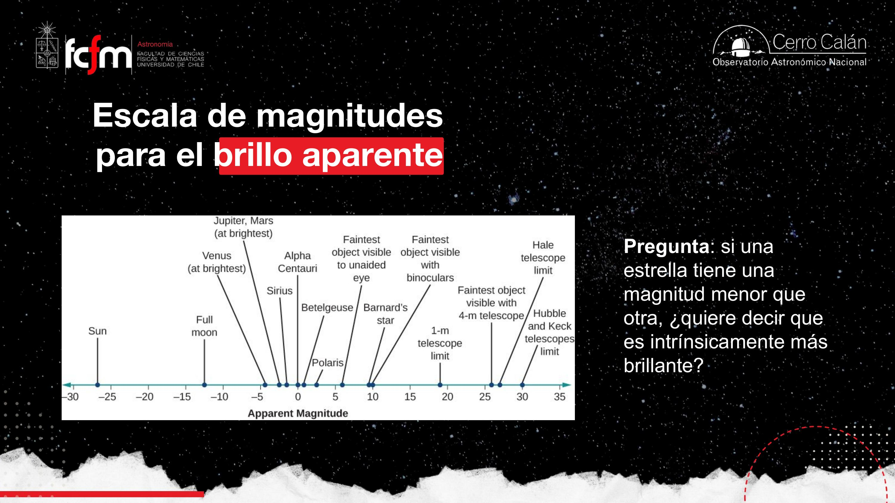
La fórmula que hicieron calzar con lo medido
Al medir la respuesta del ojo se descubrió que entre magnitud 1 y magnitud 6 — es decir, 5 magnitudes de diferencia — hay un factor 100 en flujo. La definición moderna se construyó para reproducir ese hecho empírico:
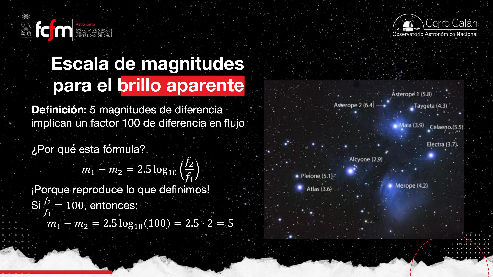
Las magnitudes son los decibeles de la astronomía: una escala logarítmica de razón de potencias. Compara: vs. . Una magnitud equivale a 4 dB. Y así como el oído (dB) responde logarítmicamente al sonido, el ojo responde logarítmicamente a la luz — por eso ambas escalas existen.
Magnitud absoluta
Llevar todas las estrellas a la misma distancia para poder compararlas.
La magnitud aparente mezcla luminosidad y distancia. Para tener una medida intrínseca, se define la magnitud absoluta : la magnitud aparente que tendría la estrella si estuviera a 10 parsec de distancia. Es una convención arbitraria, pero pone a todas las estrellas “en el mismo plano” y permite comparar quién brilla más de verdad.
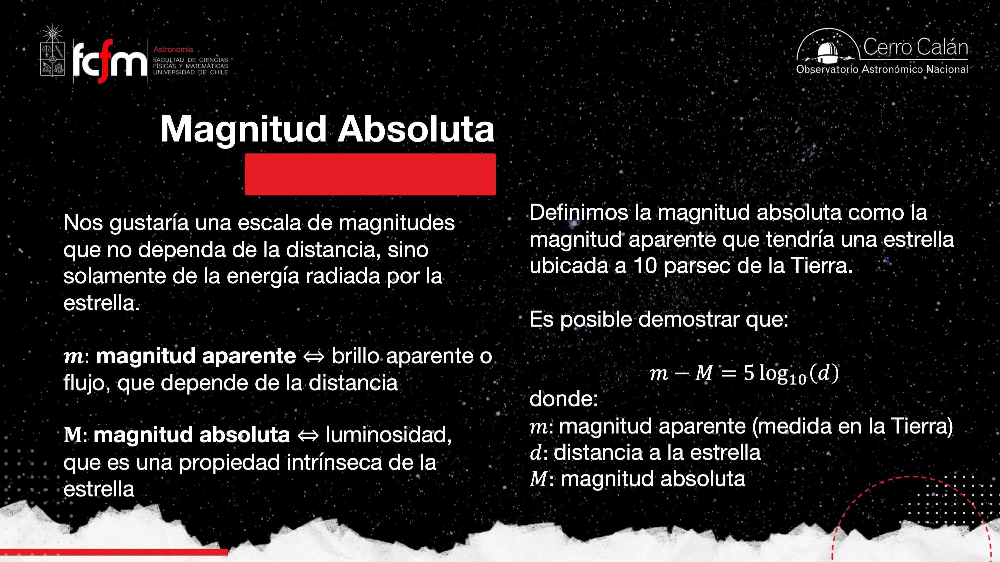
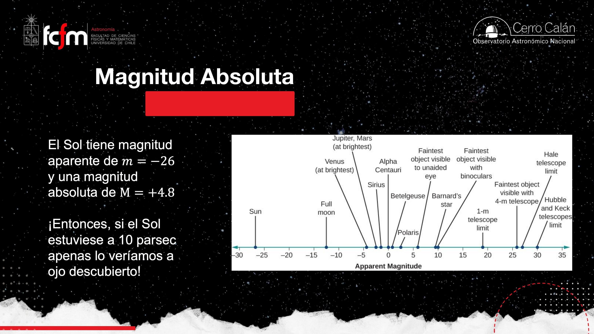
La Luna llena tiene magnitud aparente ≈ −12,7: tan brillante que en una noche sin focos alrededor genera sombra propia. (En el audio quedó como “magnitud 12”; el valor correcto es negativo — recuerda que lo brillante va hacia los números negativos.)
Temperatura y color
El color de una estrella es su termómetro (y no existen estrellas verdes).
Las estrellas radian aproximadamente como cuerpos negros: su espectro tiene un máximo (peak) de intensidad cuya posición depende solo de la temperatura superficial. Estrellas de distinta temperatura tienen el peak en distintas partes del espectro electromagnético:
- ≈ 10.000 K: peak en el ultravioleta → la vemos azulada. (Igual emite en el óptico, pero brilla más en UV.)
- ≈ 5800 K (el Sol): peak en el óptico, entre el azul y el verde → la vemos blanco-amarillenta.
- ≈ 3000–3500 K (Betelgeuse): peak hacia el infrarrojo, con mucha menos intensidad total → la vemos rojiza.
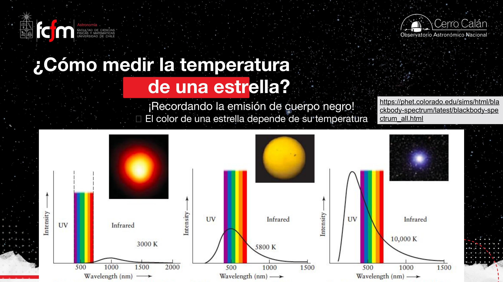
El Sol tiene su peak ¡entre el azul y el verde! Pero una estrella con peak en el centro del espectro visible emite fuerte en todos los colores del arcoíris a la vez, y la suma de todos los colores se percibe blanca. Para verse verde tendría que emitir solo en verde, y un cuerpo negro no puede hacer eso. Por eso hay estrellas rojas, anaranjadas, amarillas, blancas y azules — pero ninguna verde.
El color como diferencia de magnitudes
No podemos ir a ponerle un termómetro a Betelgeuse: solo recibimos luz. La solución observacional es medir la magnitud de la misma estrella en dos filtros distintos (por ejemplo, uno azul y uno rojo) y restarlas:
Temperatura efectiva = temperatura superficial. De ahora en adelante, “temperatura de una estrella” siempre significa la superficial; en la literatura aparece como temperatura efectiva — es lo mismo. Y la luminosidad bolométrica es el brillo integrado en todo el espectro electromagnético; también se puede trabajar con la luz en un rango acotado (un filtro), sabiendo que cada temperatura se comporta distinto en ese rango. Ojo: una estrella más brillante en un filtro puede ser menos brillante en otro.
Medir color con dos filtros es muestrear una curva continua en dos bandas y usar la razón entre ambas como estadístico suficiente para estimar el parámetro (T). Es la misma lógica de un pirómetro de dos colores en la industria: la razón de intensidades en dos longitudes de onda determina la temperatura sin necesidad de conocer el espectro completo.
Hay una segunda vía para la temperatura, que se verá más adelante: el espectro de la estrella (pasar su luz por un prisma). La espectroscopía también es flujo, pero descompuesto en longitudes de onda.
Masa: estrellas binarias y la ley de Kepler
La propiedad más difícil de medir… y la más importante para la vida de la estrella.
“Pesar” una estrella es lo más difícil, junto con medir su edad: exige apoyarse en modelos y, sobre todo, en la gravedad. La medición directa solo es posible en sistemas binarios: dos (o más) estrellas ligadas gravitacionalmente orbitando su centro de masa. La buena noticia: aproximadamente la mitad de las estrellas están en sistemas binarios o múltiples (¡se conoce un sistema de 7 componentes ligadas!). El Sol, en cambio, está solo — aunque hay estudios de “arqueología galáctica” buscando a sus hermanas perdidas.
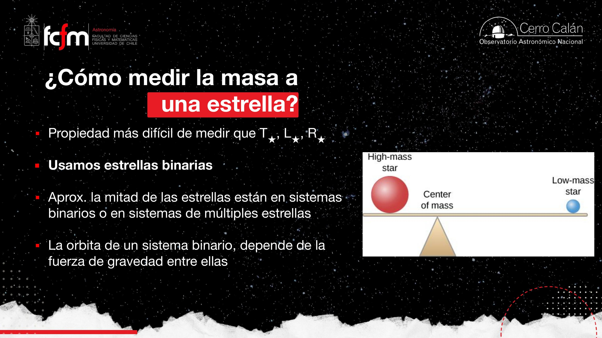
Binarias visuales
Cuando el telescopio logra resolver ambas componentes, se fija la más brillante (la primaria) y se registra cómo la secundaria se mueve a su alrededor a lo largo de los años. Con suficientes puntos —no hace falta la vuelta completa, porque conocemos la ecuación de la órbita— se ajusta el modelo orbital y se miden y directamente. Requiere paciencia: hay binarias con períodos de cientos de miles de años, medidas con placas fotográficas desde 1930.
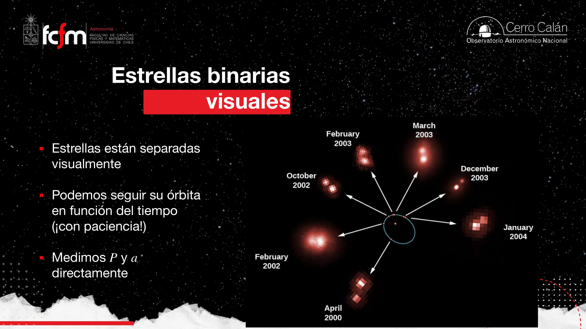
Binarias espectroscópicas
Si el par no se puede resolver visualmente (muy juntas, o el sistema inclinado), delata su naturaleza el efecto Doppler: las líneas de absorción del espectro se desdoblan y juntan periódicamente. Cuando una estrella se acerca, sus líneas se corren al azul; la otra, alejándose, al rojo; media órbita después, al revés. Lo que se mide es la velocidad radial (la componente de velocidad a lo largo de la línea de visión: positiva si se aleja, negativa si se acerca).
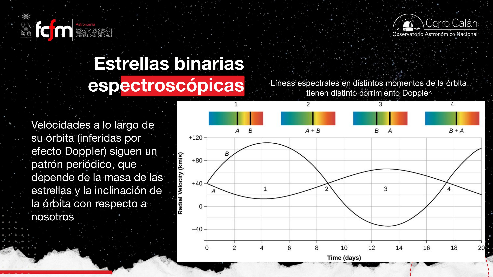
Muchas veces solo se distinguen las líneas de una de las dos estrellas (la secundaria queda “eclipsada” por el brillo de la primaria), y a priori no conocemos la inclinación del plano orbital — por lo tanto la suma de masas queda indeterminada solo con espectros. La solución es combinar: espectroscopía + fotometría (curvas de luz) dan mucha más información que cada técnica por separado.
Binarias eclipsantes
Si el sistema está casi de perfil respecto a nosotros (plano orbital alineado con la línea de visión), las estrellas se tapan mutuamente en cada vuelta: vemos eclipses periódicos en el brillo total. Es el mismo fenómeno del tránsito con que se detectan exoplanetas.
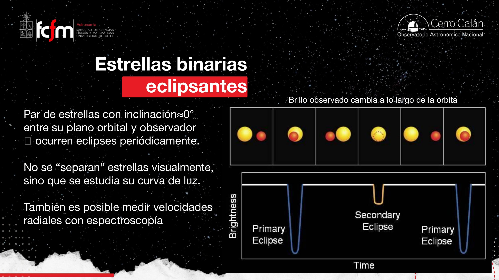
Las estrellas van desde 0,08 M☉ (mínimo para encender la fusión de hidrógeno) hasta ≈ 100 M☉. Más masivas no pueden existir: a esas masas domina la presión de radiación generada en el centro, que despedaza a la estrella cuando intenta formarse. Y aunque la masa es lo más difícil de medir, es el parámetro que determina toda la vida de la estrella.
La binaria espectroscópica es detección de señal periódica: la periodicidad estricta del corrimiento Doppler es lo que confirma la binariedad (como identificar un tono enterrado en ruido por su repetición). Y el offset de la curva de velocidad radial es el DC offset de la señal: la velocidad del centro de masa del sistema.
Radio estelar
Cronometrar eclipses, combinar telescopios o despejar la ecuación.
1 · Con eclipses: distancia = velocidad × tiempo
En una binaria eclipsante hay 4 puntos de contacto: cuando la estrella pequeña toca el disco de la grande (1), cuando entra completa (2), cuando empieza a salir (3) y cuando termina de salir (4). Midiendo el tiempo entre esos contactos, y conociendo la velocidad orbital por espectroscopía, el tamaño sale de la cinemática más básica:
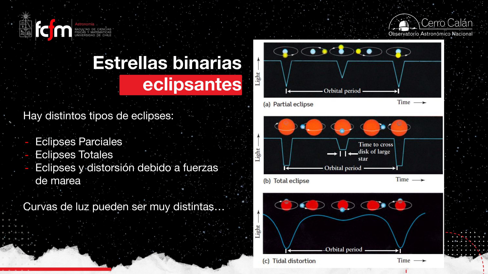
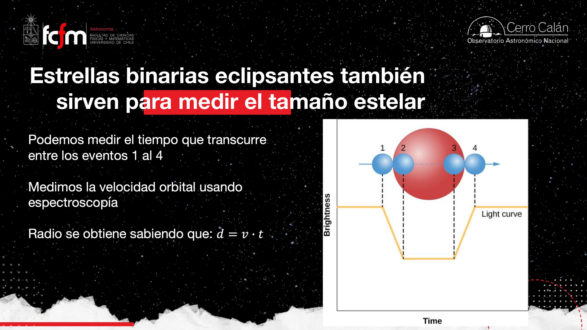
2 · Medición directa: interferometría
Para estrellas supergigantes cercanas se puede resolver el disco directamente combinando muchos telescopios (interferometría, que aumenta la resolución angular). Betelgeuse fue una de las primeras: dejó de ser un punto y se convirtió en una superficie con estructura. Por ahora la técnica solo alcanza para supergigantes; el resto de las estrellas siguen siendo puntos.
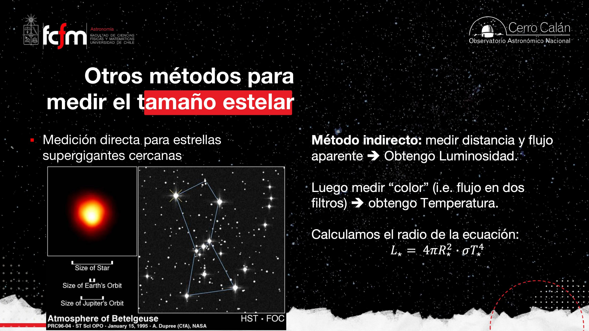
3 · Método indirecto (para cualquier estrella)
Si mido la distancia y el flujo, obtengo la luminosidad (ley del cuadrado inverso). Si mido el color, obtengo la temperatura. Con y en mano, el radio se despeja de Stefan-Boltzmann: . “Mira todo lo que podemos hacer solo midiendo luz.”
Distancia: el paralaje
Triangulación con la órbita de la Tierra como base.
Casi todo lo anterior requiere conocer la distancia — y medir distancias es de lo más difícil en astronomía. El método más directo es el paralaje: el mismo principio de triangulación que usan los topógrafos, pero con una base gigante: los extremos de la órbita terrestre. Se observa la estrella cercana en marzo y de nuevo en septiembre (seis meses después, desde el punto opuesto de la órbita, a 2 AU del primero) y se mide cuánto parece moverse respecto a las estrellas de fondo, que están tan lejos que no se mueven apreciablemente.
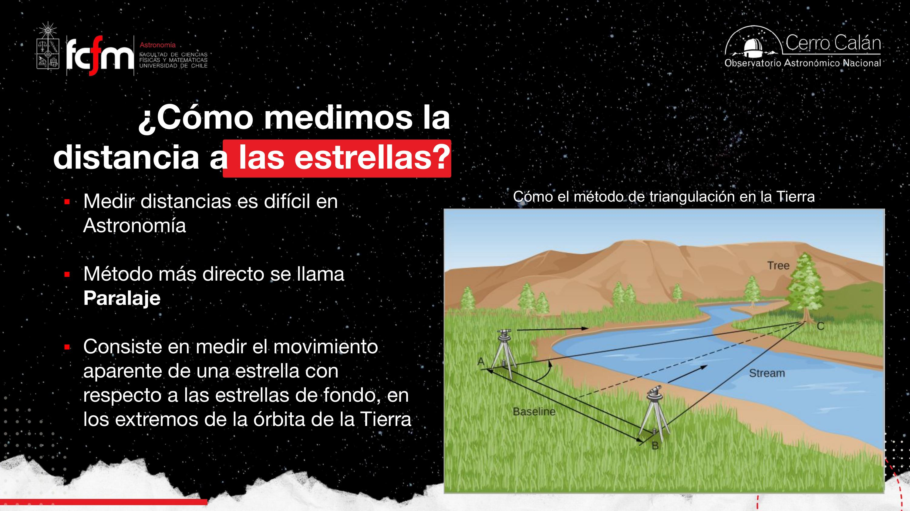
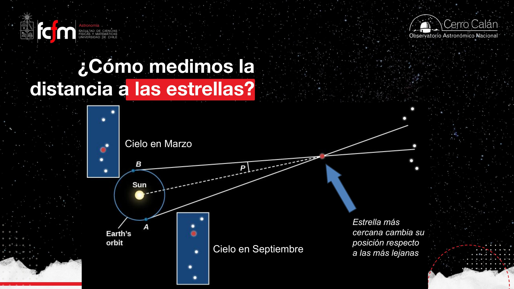
Estira el brazo, levanta el pulgar y míralo alternando un ojo y el otro: el dedo “salta” contra el fondo. Acércalo a la cara: salta más. Ese es todo el paralaje: más cerca ⇒ mayor variación aparente. Tus dos ojos son los dos extremos de la órbita terrestre.
La clase no la desarrolló, pero es el estándar que conviene conocer: si el ángulo de paralaje se mide en segundos de arco, la distancia en parsecs es . El parsec se define justamente como la distancia a la que el paralaje vale 1″ — equivale a 3,26 años luz.
Alcance y precisión
- El paralaje funciona con buena precisión hasta ≈ 1000 parsec (1 kpc), con errores de hasta ~10% — “que en astronomía es maravilloso”.
- Más allá, el ángulo es demasiado pequeño y entran otras técnicas: la escalera de distancias — paralaje → estrellas variables Cefeidas → supernovas tipo Ia → corrimiento al rojo de galaxias.
- Las Cefeidas son estrellas pulsantes que se inflan y desinflan con período regular; Henrietta Leavitt descubrió la relación período–luminosidad que las convierte en velas estándar. Con Cefeidas, Hubble midió que Andrómeda está a ≈ 2,5 millones de años luz — imposible que estuviera dentro de la Vía Láctea: así supimos que hay más galaxias (principios del s. XX).
El paralaje es visión estéreo: dos cámaras separadas por una base estiman profundidad por disparidad, con error que crece con la distancia (la disparidad cae como y el ruido angular es fijo). Por eso hay un alcance máximo útil — igual que un sensor de profundidad estéreo pierde precisión a lo lejos, el paralaje “se acaba” cerca de 1 kpc.
Hipparcos, Gaia y la astrometría
De ~100 paralajes conocidos a más de mil millones.
Medir la posición de las estrellas (y sus cambios) se llama astrometría. Los ángulos de paralaje son diminutos — variaciones de milésimas de segundo de arco — y por décadas solo se conocía el paralaje de unas ~100–150 estrellas. Los telescopios espaciales cambiaron todo:
- Hipparcos (años 90): midió más de 100.000 paralajes, con precisión de hasta 0,001″ = 1 miliarcosegundo (mas). Su nombre homenajea a Hiparco, el del ranking de magnitudes.
- Gaia (ESA, 2013–2025): telescopio astrométrico que midió distancias a más de 10⁹ estrellas (¡mil millones!), hasta ~2 kpc para estrellas brillantes (~1 kpc con la mejor precisión para estrellas débiles como enanas rojas). Ya concluyó sus observaciones; su último data release (DR) —que además de posiciones incluye espectros— se libera a fines de este año.
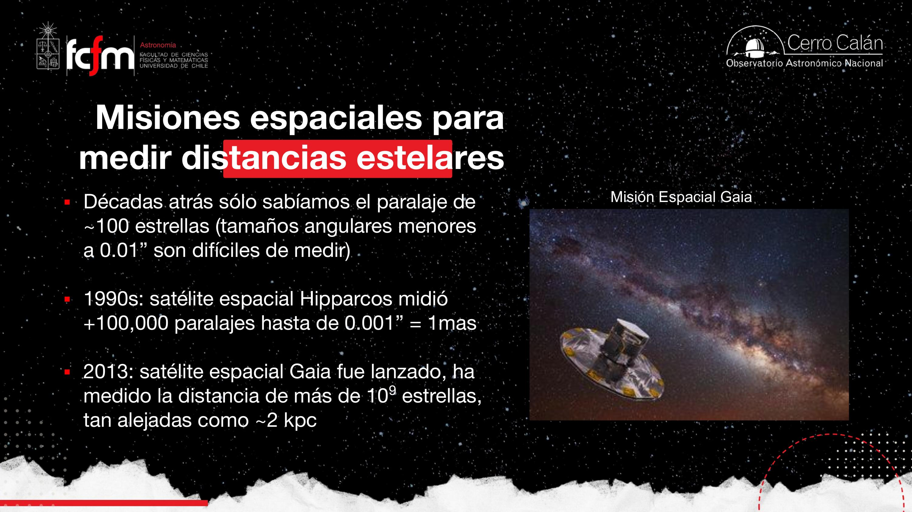
Gaia primero toma los datos y luego las agencias los procesan y liberan por etapas: los data releases (DR). Es un pipeline de datos a escala de mil millones de fuentes — posiblemente el catálogo astronómico más influyente de la década: posiciones, paralajes, movimientos propios y ahora espectros.
Hacia el diagrama HR
Con L y T medidas, ya podemos construir el mapa maestro de las estrellas.
Cierre de la clase: ya sabemos medir brillo (aparente e intrínseco), temperatura (por color), masa (binarias + Kepler), radio (eclipses, interferometría o despeje) y distancia (paralaje). El siguiente paso natural —anunciado para la próxima clase— es graficar luminosidad versus temperatura para miles de estrellas: el diagrama de Hertzsprung-Russell (HR).
¿Cómo se clasifican las estrellas? ¿Qué es la Secuencia Principal? ¿Cuánto vive una estrella y de qué depende? ¿Qué es el diagrama de Hertzsprung-Russell? Adelanto conceptual (inferencia a partir de esta clase): como , las líneas de radio constante son diagonales en el plano (T, L) — una gigante roja es fría pero luminosa (R enorme); una enana blanca es caliente pero débil (R diminuto). El tiempo que una estrella pasa fusionando hidrógeno en helio tiene nombre propio y define la banda principal del diagrama.
Todas estas propiedades salen de lo único que tenemos: luz. Flujos, colores, líneas espectrales que se mueven, eclipses que se cronometran y posiciones que cambian — con eso se reconstruye la física completa de objetos a los que jamás podremos ir.
Conceptos clave
Tabla de repaso rápido.
| Concepto | Qué es / valor | Por qué importa |
|---|---|---|
| Luminosidad L | Energía radiada por segundo; W | Propiedad intrínseca de la estrella |
| Flujo F | (W/m²) | Lo que mide un detector; depende de dónde se evalúe |
| Constante solar | ≈ 1370 W/m² a 1 AU (6×10⁷ W/m² en superficie solar) | Flujo solar recibido en la Tierra |
| Stefan-Boltzmann | ; σ ≈ 5,67×10⁻⁸ W m⁻² K⁻⁴ | Une luminosidad, radio y temperatura; T pesa como T⁴ |
| Ley del cuadrado inverso | 2× más lejos ⇒ 4× menos flujo; 10× ⇒ 100× menos | |
| Brillo / magnitud aparente m | Flujo medido desde la Tierra; escala inversa y logarítmica | No es intrínseco: mezcla luminosidad y distancia |
| Escala de Hiparco | Ranking 1 (brillante) a 6 (límite del ojo) | Origen histórico de la escala inversa; negativos para lo muy brillante |
| Δm ⇄ flujos | ; 5 mag = ×100 | Escala log calzada con la respuesta del ojo; 1 mag ≈ ×2,512 |
| Magnitud absoluta M | m que tendría la estrella a 10 pc; | Medida intrínseca; permite comparar estrellas; Sol: M = +4,8 |
| Color | Diferencia de magnitudes en dos filtros | Termómetro estelar: rojo = fría, azul = caliente |
| Temperatura efectiva | = temperatura superficial (Sol ≈ 5777 K) | La T de las ecuaciones; no es la del núcleo (15×10⁶ K) |
| 3ª ley de Kepler | Masas (suma) en binarias midiendo P y a | |
| Binarias | Visuales · espectroscópicas (Doppler) · eclipsantes (tránsitos) | ~50% de las estrellas; única balanza estelar directa |
| Rango de masas | 0,08 – ~100 M☉ | Más de 100 M☉: la presión de radiación destruye la estrella |
| Radio estelar | Eclipses (d = v·t), interferometría, o despeje de L = 4πR²σT⁴ | Betelgeuse ~1000 R☉, resuelta por interferometría |
| Paralaje | Triangulación con la órbita terrestre; d(pc) = 1/p(″) | Distancias hasta ~1 kpc con error ≤ 10% |
| Parsec | Distancia con paralaje de 1″; 1 pc = 3,26 años luz | Unidad natural de la astrometría |
| Gaia / Hipparcos | 10⁹ paralajes hasta ~2 kpc / 10⁵ paralajes a 1 mas | Revolución astrométrica; DR final de Gaia este año |
Exámenes de práctica
10 exámenes de 5 preguntas (3 de alternativas autocorregibles + 2 de respuesta escrita).